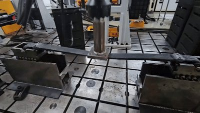
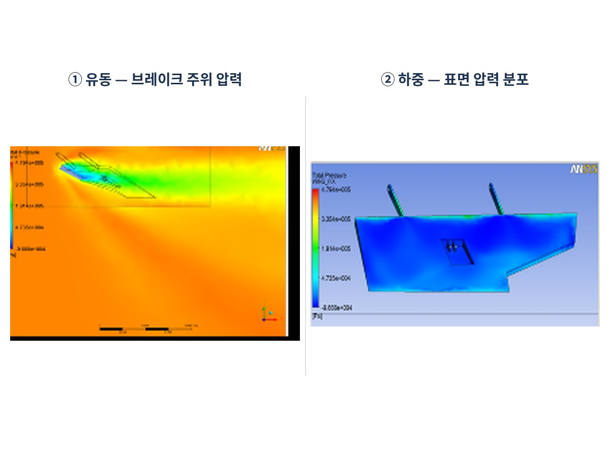
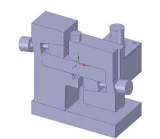
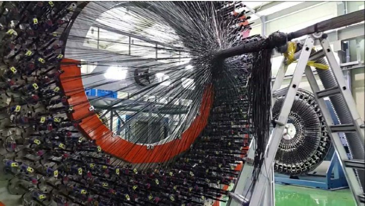
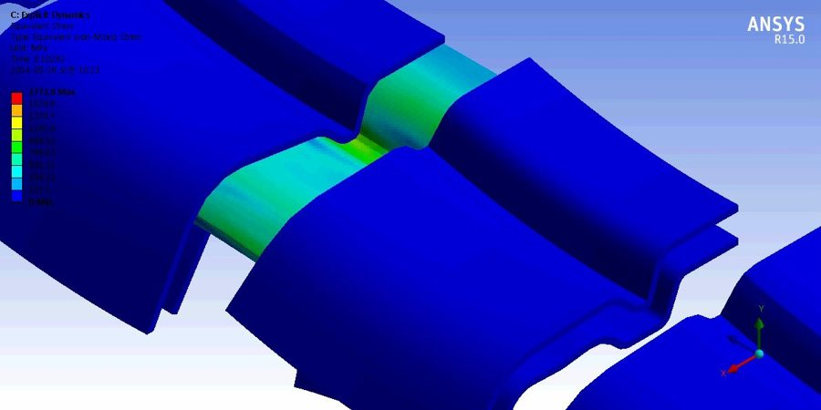
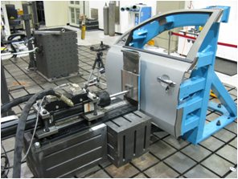
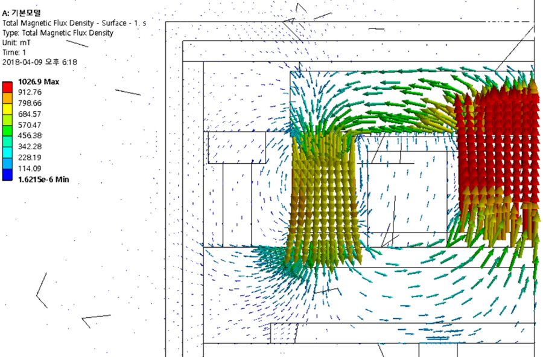
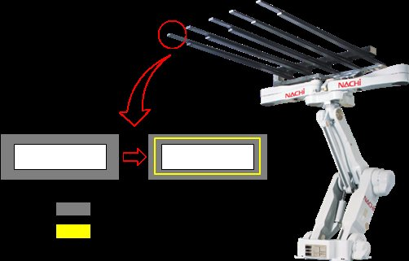

복합소재·플라스틱2026
CFRP 방탄 헬멧 성형
헬멧 DP용 CFRP 제품 성형·납품
PROJECTS
복합소재·플라스틱 · 해석 · 시편 · 로봇
헬멧 DP용 CFRP 제품 성형·납품

물류 운반 로봇용 CFRP 성형 · 알루미늄 금형 제작

고온 내구성 레진 3D 프린팅 코어

기능성 수지 소재 개발·납품

HOWO MAX 적용 · 연 1,000대 수입·유통

무게 −50 % · 피로 200만 회 · ES 규격 통과

CCS COMBO TYPE1 부품 개발

자체 Fortran 3D 솔버 · 노즐별 제품 직경 예측

자체 Fortran 솔버 · 시험 기반 물성 피팅

자속밀도 방향 → 3D 열유동 연계 · 승온 시간 산출

공군 항공기 유동·하중·피로 해석

규격 시험용 CFRP 시편 가공

탄소섬유 복합소재 시제품

규격 시험용 치구 설계·제작

스케치 → 경로 → 로봇 프로그램 · TCP 제어

라벨링·테이핑 승강 컨베이어
2006 – 2018 · 51건 · 연구기관·대학 공동 수행




